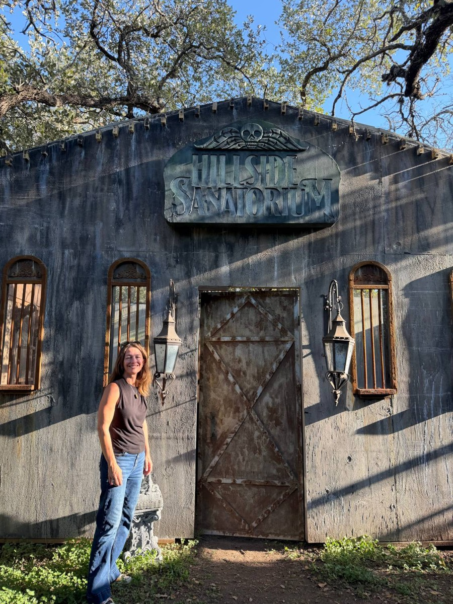
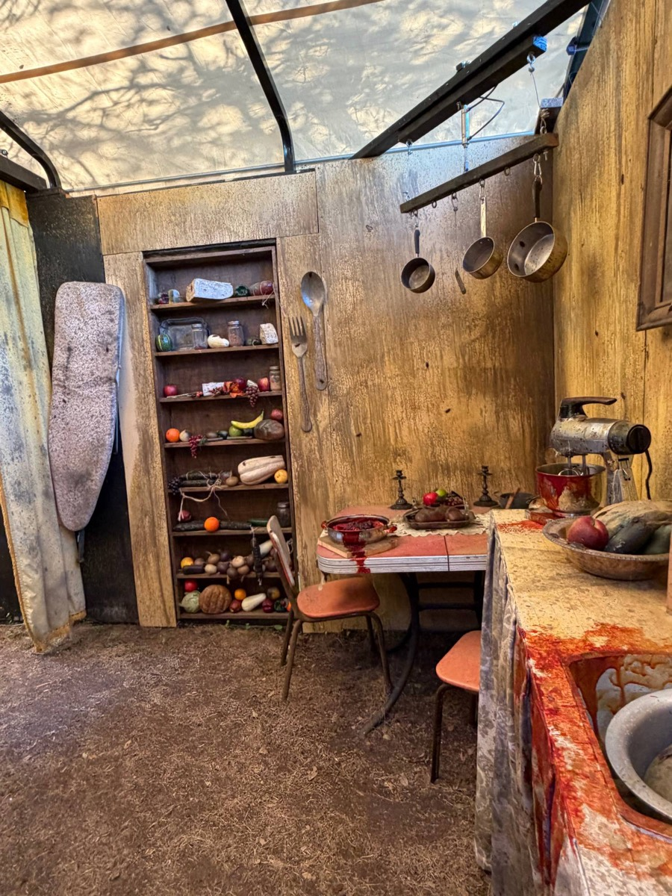
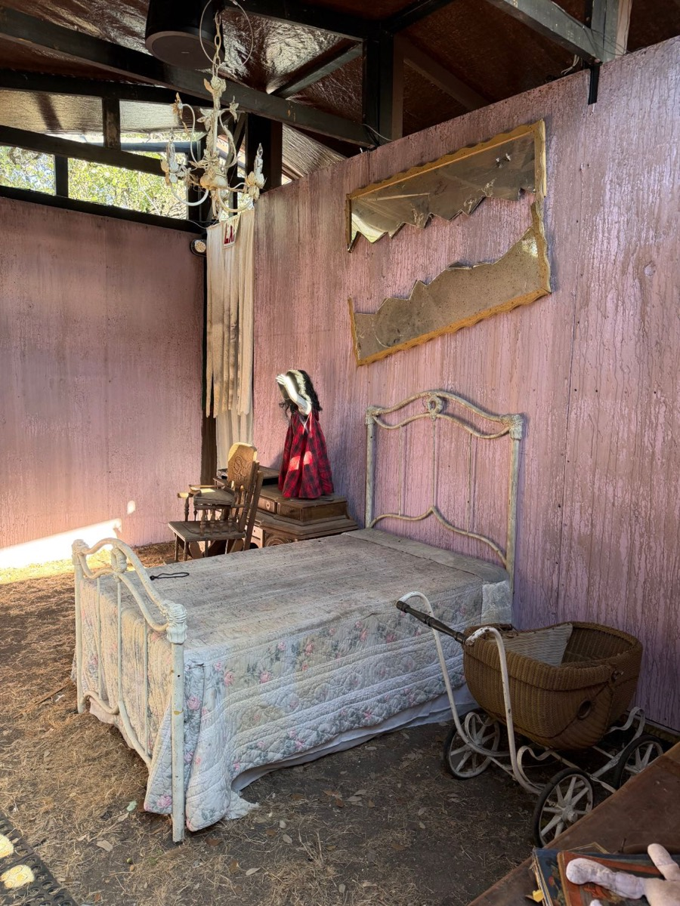
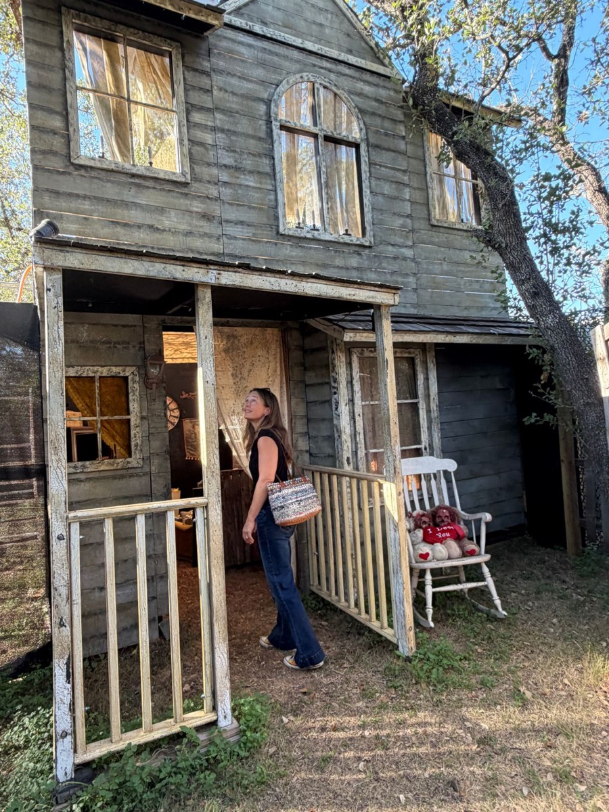
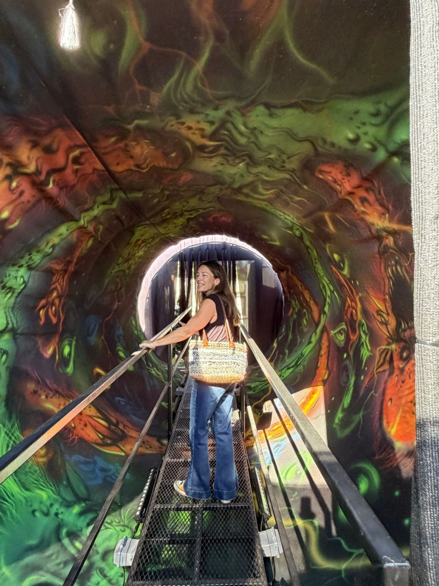

Some interviews happen at a coffee shop.
This one happened in a sanitorium.
Not a real one, thankfully. April Garner and I sat down in the old lobby of the Hillside Sanatorium, part of the Mortis Manor haunted house that got its start in a Steiner Ranch backyard and has since moved just down the road. We had just walked every hallway, bedroom and creaking corner of it in the daytime.
Even in the daytime, it was a lot.

Before we sat down, April and I explored the whole haunted compound. For those brave enough to go through it for real, it’s about an 18-minute experience that winds through a series of structures and outdoor areas, each one its own scene.
You can learn more about the haunt, and the people behind it, at Fatal Fear.
I should confess something up front: I don’t do haunted houses.
The idea of someone jumping out at me in the dark is genuinely terrifying at my adult age and stage. If I were ever forced to walk through one at night, with actors and all, an adult diaper might be required.
So the daytime tour, with nobody lurking around the corners, was exactly my speed.
The level of detail blew my mind. The pictures on the walls. The little items in Granny’s kitchen. Rooms that feel like someone actually lived—and possibly died—in them.
And many of those rooms show up in April’s novel, The Well, which tells the story of how Mortis Manor came to be.
I know April from Vandergrift soccer, which is how a lot of Steiner friendships start. She’s an editor by day, a mom of two boys who are “just barely kids still,” and the author of two books: the award-winning The Way It’s Supposed to Be and, most recently, The Well.
We talked about haunted houses, of course. But we also talked about something I think a lot of us can relate to: wanting to make something, doubting yourself the whole way through and finishing it anyway.
First things first: Why Steiner?
April is a Texan—born in Austin, raised mostly in Dallas—who came to Austin for college in ’93 and, like so many of us, never left.
She and her husband were living in South Austin when they started wanting something different: more families, more kids their kids’ age.
So in 2011, with a three-year-old and a six-month-old, they picked up and moved to Steiner. Their timing was memorable. They arrived right around the Steiner Ranch fires.
“We’re thankful our brand-new house didn’t burn down,” she says.
What they were really looking for was community—and an easy way to find it.
“I’m an introvert who also needs friends,” April says. “So it has to be easy to make friends. I can’t have to drive across town to meet people.”
Did Steiner deliver?
“Moving to Steiner was very much what I thought it was gonna be,” she says. Kids at the same school. Kids going to school with the kids across the street. Friendships that happen almost by default.
Hold on to that idea. It comes back.
How does a novelist end up writing for a haunted house?
Mostly by living down the street from the Robinsons.
Every Halloween, Liana and Brian Robinson transformed their house—their ordinary house, on a regular-sized Steiner lot—into a haunted house. They built tunnels inside it that wound out through the backyard.
April’s family got involved the way neighbors do. They acted in it. They helped out front taking tickets. Then they kept coming back every year.
What April noticed was that the haunt wasn’t just a string of random jump scares. Every room was tied together by a story Liana had envisioned.
So when the Robinsons asked April to write a few blurbs for their website, she wrote little paragraphs that gave each piece some backstory.
And that gave her an idea: Why not write the whole origin story?
“I was gonna do it real quick,” she says. “It was only gonna take a few months.”
It took two and a half years.
(Anyone who has ever started a “quick” project is nodding right now.)

What will readers recognize when they walk through it?
Quite a lot.
The Well centers on the origin of Mortis Manor itself: who built it, who lived in it and how the house became what it is.
When you walk into the haunt, the main facade you see is Mortis Manor. Inside are spaces that show up in the book, including the daughter’s bedroom and James Mortis’ study.

“All of the physical descriptions that are in the book are taken from the haunt itself,” April says.
The haunt also plays with two time periods, which I didn’t expect. Part of the story takes place in the 1980s, when a group of teenagers sneaks into the abandoned house for a party. That one doesn’t end well for them.
April read me a passage from that part of the book, right there in the Sanatorium.
I realized I couldn’t remember the last time someone read aloud to me. It’s weirdly relaxing—even when the story involves a hockey mask.
Why does Alice never leave the house?
This was the question I couldn’t stop thinking about while reading.
Alice is one of the book’s main characters. She’s the woman who lived in Mortis Manor with her husband, James. Before the house was built, she was running from shame. She had become pregnant before marriage, and her father had stopped speaking to her.
When she arrives in the town of Hillside, she’s lit up by it. She imagines walking to the shops, getting out in the community and making friends.
But she never does. Once they move in, she never really leaves the house.
April says it’s twofold. James starts pulling away and leaves Alice alone with the children, whom she feels she has to stay and protect. But there’s also something more magical at work.
“The manor itself does not want her to leave,” she says.
There are even questions about how the manor was built—or whether it was built at all. James describes it almost as if it simply rose up from the ground at his instruction.
April admits she didn’t set out to write Alice’s isolation as a theme. But talking about it out loud, she saw the connection to her own life.
“When I moved to Steiner, I was looking for community,” she says.
That stuck with me.
Because a neighborhood like ours can look great on paper and still feel isolating. You don’t always know who your neighbors are, what stage of life they’re in or whether you’ll ever get past a wave from the driveway.
The town can be right there at your front steps. You still have to find a way out the door.
That’s really why the Porch Project exists. It’s meant to be that way out the front door—a simple place to find out what’s happening around Steiner, meet your neighbors and get involved. If you’re looking for your first step, start with the Porch Project events calendar.

So… what is the well?
It started as a prop.
Back when the haunt lived at the Robinsons’ house, its centerpiece was a big, lit well out front. Look down into it, and it seems to go on forever.
“A well is a very easy thing to see as a portal,” April says. “A portal into another world.”
It became her portal too.
When she started writing, April had a hard time getting into the story. The haunt has so many characters that she didn’t know whose eyes readers should see it through. So she invented Kat, a modern-day woman with access to a well that opens into another world.
Then she did something I love: She’d sit on her back porch and imagine the well in her own backyard.
“Like, I’m going into there to get the story,” she says.
And the metaphors? She says most of them weren’t planned.
“A lot of times I write things straightforward, and then I go back and read them,” she says. “I’m like, ‘Oh, there are metaphors in there.’ I didn’t create them. They grew there.”

It took her until 40 to really go for it.
April has wanted to write since she was little. She wrote poetry. She wrote song lyrics—“terrible, terrible song lyrics,” she says. She always kept a journal.
But it took years before she had the confidence to pursue writing seriously and publicly.
That happened around the time she turned 40.
I find that genuinely encouraging. There’s no deadline on starting the thing you’ve always wanted to do.
What do you do when the voice in your head says it’s terrible?
April says there are different kinds of stuck. For her, getting stuck is often a crisis of self-confidence.
It’s the voice that says, This is terrible. Why are you even writing this? You should just quit.
Her answer, which she discovered writing her first book and which still works, is wonderfully blunt.
It doesn’t have to be the best thing anyone has ever written. It just has to get finished.
It’s a first draft. She’ll come back and make it better. But first, she finishes it.
I’m pretty sure that applies to a lot more than novels.
For the record, The Well is not terrible. It’s fabulous.
Find your people. (Yes, even writers.)
Writing can be lonely. Nobody is breathing down your neck unless there’s a publisher involved, so motivation is mostly up to you.
A couple of years ago, April helped start a group of local Steiner writers. Sometimes they bring in a guest speaker. Sometimes they share ideas. Mostly, they show up for each other.
“Being with other people who are in the same situation, who can shore you up and get excited about your stuff and express similar frustrations,” she says. “I always leave that meeting, like, I wanna go home and write.”
No giant chunks of time? Write anyway.
Like most writers, April would love a big, uninterrupted block of time to sit down and disappear into a story. Her ideal day would include an hour to mill around the house, pace and get in the mood.
That’s not her life. It’s probably not yours either.
So her ritual is simple: write whenever there’s time, wherever she is.
That might mean 45 minutes in the car during soccer practice. It might mean an hour on the couch at 5 a.m.
“Life isn’t ideal,” she says.
Getting into a creative headspace from a parking lot outside soccer practice is its own skill. And that’s how a two-and-a-half-year “quick project” actually gets finished.
The story behind the story
I walked into that haunted compound expecting to talk about ghosts. I walked out thinking about something else entirely.
A neighbor’s Halloween tradition became a family volunteer gig. A few website blurbs became a novel. A writer who waited until 40 to take herself seriously finished a book in 45-minute stolen chunks, with a group of Steiner writers cheering her on.
None of it happened alone, and none of it happened far from home.
Alice never made it out her front door. April did—and look what she found on the other side.
The lightning round
Fast answers, Steiner edition.
- Home in Steiner since
- 2011, right after the fires.
- Day job
- Editor. “I edit a lot of things.”
- First writing
- Poetry and “terrible, terrible song lyrics.”
- Writing ritual
- Whenever there’s time, wherever she is.
- Favorite thing about Steiner
- A trail network right out her front door, with a different route every time.
- A whole Saturday to herself
- Coffee, writing and reading at a neighborhood coffee shop (she misses Cups and Cones), then the trails.
The Porch Project takeaway
If there’s a project you’ve been circling for years—a book, a business, anything that makes you a little nervous—April’s advice is refreshingly practical:
Finish it, even if it’s terrible. If you’re passionate about it, it probably won’t be!
Use the 45 minutes you have instead of waiting for the free afternoon you don’t. Find a few people nearby who are trying to do the same thing. Let them get you excited again when you run out of steam.
And look around while you’re at it.
A haunted house in a neighbor’s backyard became a novel.
Sometimes the best stories start right down the street.
Brave enough to see Mortis Manor for yourself, or looking for something a little less scary? Check out what’s happening around Steiner on the Porch Project events calendar.
Real experiences, real opinions, a little AI help with the writing.